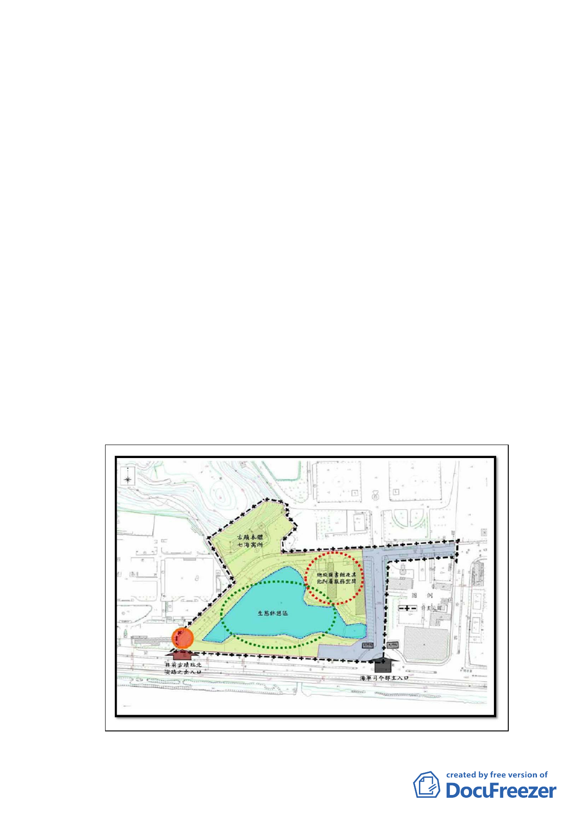

二、計畫緣起：
(一) 蔣 故總統經國先生為影響戰後臺灣歷史發展之重要的政治領袖，
在臺灣的政治民主與經濟上，具有重要歷史定位；「七海寓所（蔣
經國故居）」本體與庭院業於95年7月18日公告為本市市定古蹟，
其內部生活空間及室內陳設，具體體現其樸實親和風範。
（二）為能進一步呈現經國先生生前生活樣貌，市府文化局續將其當時生
活休憩活動空間之七海潭與週邊環境，併同納入古蹟指定範圍，並
將以古蹟為整體園區之主核心，整合週邊自然、人文等環境資源，
規劃兼具古蹟保存、展示教育、文物典藏、學術研究與生態休憩的
「七海文化園區」，設置古蹟活化區、七海潭生態休憩區，並在園
區內興建總統圖書館及其他附屬服務空間，作為經國先生相關的文
物典藏、展示教育與學術研究交流等文化空間使用，俾能推展經國
先生之政治觀與哲學觀、提升古蹟活化再利用效能，提供市民導
覽、教育推廣等基礎服務，型塑優質文化休閒空間。
（三）為有效保存並活化文化資產，文化局業依文化資產保存法相關法令
辦理擴大指定古蹟範圍程序，推展「經國七海文化園區」整體規劃
事宜，符合都市計畫法第27條第1項第4款規定，爰辦理專案變更。
- 12 -